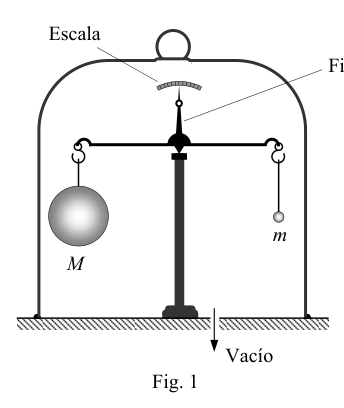
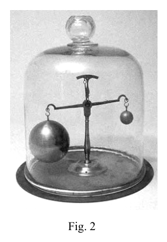

P2 Baroscopio. El baroscopio es un aparato que se utiliza para comprobar indirectamente el principio de Arquímedes. Consta de una balanza de cuyos brazos se suspenden dos esferas, una hueca y otra maciza de mucho menor tamaño. En la figura 1 se esquematiza un baroscopio con balanza de brazos iguales, y en la figura 2 se muestra el baroscopio de una colección de instrumentos científicos antiguos. Una vez equilibrada la balanza, es decir con sus brazos horizontales y el fiel marcando el centro de la escala (situación de la figura 1), se coloca el aparato en el interior de una campana de vidrio. Al hacer el vacío dentro de la campana, la balanza se desequilibra y alcanza una nueva posición de equilibrio con los brazos inclinados y el fiel desviado (situación de la figura 2). La esfera hueca tiene un radio R = 5,00 cm y su masa es M = 40,0 g. A temperatura ambiente, la presión antes de hacer el vacío es la atmosférica, p0 = 5 10 01 ,1 Pa y, en estas condiciones, la densidad del aire es 3 kg/m 30 ,1
aire . La resolución de la balanza es de 100 mg, es decir, una variación entre las masas suspendidas de 100 mg hace que el fiel se desvíe una división de la escala. Considerando que el aire se comporta como un gas perfecto y que el volumen de la esfera maciza es despreciable frente al de la hueca, responde a las siguientes cuestiones: a) Antes de hacer el vacío:
- Calcula el empuje sobre la esfera hueca.
- Determina la masa m de la esfera maciza para que la balanza esté equilibrada. b) Después de hacer el vacío y suponiendo que la temperatura no ha cambiado:
- ¿Hacia qué lado se desequilibra la balanza? Razona tu respuesta.
- Si el fiel de la balanza se desvía 6 divisiones, ¿cuál es la presión en el interior de la campana? Fig. 2 Fig. 1 Fiel Escala Vacío M m OAF 2007 PRUEBAS DEL DISTRITO UNIVERSITARIO DE ZARAGOZA REAL SOCIEDAD ESPAÑOLA DE FÍSICA
Solución
a1) El teorema de Arquímedes, conocido por todos desde casi la más tierna infancia, establece que todo cuerpo sumergido en un fluido experimenta una fuerza ascensional igual al peso del volumen de fluido desalojado. De acuerdo con ello, antes de haber hecho vacío en el interior de la campana, el empuje que experimenta la esfera grande de la balanza viene dado por
g R B aire 3 3 4
(1)
Numéricamente
N 10 68 6 3 = , B
a2) El peso aparente de la esfera grande es igual a su propio peso menos este empuje. En la esfera maciza el empuje es despreciable debido a su pequeño tamaño. Como los brazos de la balanza son iguales, en equilibrio mecánico se cumple
mg B Mg
aire R M m 3 3 4
kg 10 93 3 2 = , m
b1) Cuando se hace vacío disminuye la masa de aire encerrado en el volumen de la campana y, por tanto, disminuye su densidad y también el empuje sobre la esfera grande. Su peso aparente aumenta y la balanza se desquilibra hacia la izquierda, como se observa en la figura 2 del enunciado. b2) El fiel marca una desviación de = 6 divisiones cuando, hecho el vacío, se alcanza el nuevo equilibrio mecánico. Como la resolución de la balanza es r = 100 mg/división, la desviación del fiel significa que el peso aparente de la esfera grande ha aumentado una cantidad g , que realmente corresponde a una disminución del empuje hidrostático
g r B
El nuevo empuje B ́ será entonces
g r B B
(2)
Si llamamos aire a la densidad del aire residual en la campana, se tendrá que
g R B aire
3 3 4
(3)
Combinando (1), (2) y (3) se obtiene
3 4 3 R r aire aire
(4) La densidad del aire puede relacionarse con la presión mediante la ecuación de los gases perfectos. Si V es el volumen de la campana, n, , p0 y p los números de moles de aire y las presiones antes y después de hacer el vacío
nRT V p
0 , RT n pV
Llamando Mm a la masa molar del aire
V / nM m aire = , V / M n m aire
Luego
RT M p m aire
0 , RT M p m aire
De las relaciones anteriores se deduce que
0 p p aire aire
Llevando esta expresión a (4) se obtiene finalmente
aire R r p p 3 0 4 3 1 atm 118 0 Pa 10 20 1 4 , , p
OAF 2007 PRUEBAS DEL DISTRITO UNIVERSITARIO DE ZARAGOZA REAL SOCIEDAD ESPAÑOLA DE FÍSICA

bilancia con sfera e campana vuoto
dettaglio sfera e campana baroscopioTopic: Fluid Mechanics, Thermodynamics Metodi: Hydrostatic Equilibrium, Ideal Gas Law, Physical Modeling Competenze: Mathematical Modeling, Physical Reasoning, Estimation & Approximation Objects: Sphere, Lever, Gas Fonte: Testo (PDF) — p.4
P2 Baroscopo. Il baroscopio è un apparecchio che viene utilizzato per verificare indirettamente il principio di Archimede. Consiste in una Scala dalle cui braccia si sospendono due sfere, una buca e un’altra massa di dimensioni molto minori. In figura 1 si Il progetto di questo progetto di ricerca è stato sviluppato in modo da permettere di sviluppare un’ottica di ricerca e di sviluppo. strumenti scientifici antichi. Una volta che la bilancia è equilibrata, cioè con i braccia orizzontali e il fiato segnando il centro della scala (situzione di figura 1), l’apparecchio è inserito all’interno di una campana di vetro. Quando si fa il vuoto all’interno della campana, la bilancia si Il corpo si sbilanciano e raggiunge una nuova posizione di equilibrio con le braccia inclinate e il fiolo deviato (situazione di figura 2). La sfera vuota ha un raggio R = 5,00 cm e la sua massa è M = 40,0 g. A temperatura ambiente, la pressione prima di fare il vuoto è l’atmosfera, p0 = 5 10 01 ,1 E, in queste condizioni, la densità dell’aria è 3 kg/m 30 ,1
aria . La risoluzione della bilancia è di 100 mg, cioè una variazione tra le masse sospese di 100 mg fa sì che il si allontana una divisione della scala. Considerando che l’aria si comporta come un gas perfetto e che il volume della sfera massiccia è dispregiato rispetto alla massa di di cui al punto 1.3.1, risponde alle seguenti domande: a) Prima di fare il vuoto:
- Calcola la spinta sulla sfera vuota.
- Determina la massa m della sfera massica in modo che la bilancia sia equilibrata. b) Dopo aver fatto il vuoto e supponendo che la temperatura non sia cambiata:
- Da che parte si destabilizza la bilancia? Raziona la tua risposta.
- Se il fidele della bilancia si allontana 6 divisioni, qual è la pressione all’interno della campana? Fig. 2 Fig. 1 Fedeli Scala Vaccio M m OAF 2007 Provate del Distretto Universitario di Zaragoza REAL SOCIetà spagnola di fisica
Soluzione
a1) Il teorema di Archimede, conosciuto da tutti fin dalla più tenera infanzia, stabilisce che ogni corpo immerso in un fluido prova una forza ascendente pari al peso del volume di fluido sfrattato. In base a ciò, prima di Se si è fatto un vuoto all’interno della campana, la spinta che la grande sfera della bilancia prova viene data per
g R B aria 3 3 4
(1)
Numericamente
N 10 68 6 3 = , B
a2) Il peso apparente della grande sfera è uguale al suo peso meno questo impulso. Nella sfera massica il pulso è dispregiata a causa della sua piccola dimensione. Poiché le braccia della bilancia sono uguali, in equilibrio meccanico si ottengono
mg B Mg
aria R M m 3 3 4
kg 10 93 3 2 = , m
b) Quando viene svuotato diminuisce la massa di aria contenuta nel volume della campana e quindi diminuisce il volume di aria contenuta nella campana. densità e anche la spinta sulla grande sfera. Il suo peso apparente aumenta e la bilancia si sbilanciano verso la a sinistra, come si vede nella figura 2 della frase. b2) Il fedele segna una deviazione di = 6 divisioni quando, dopo il vuoto, si raggiunge il nuovo equilibrio meccanico. Come la risoluzione della bilancia è r = 100 mg/divisione, la deviazione del fiel significa che il peso apparente della grande sfera ha aumentato un certo numero g , che corrisponde in realtà a una diminuzione della spinta idrostatica
g r B
Il nuovo impulso B sarà allora
g r B B
(2)
Se chiamiamo aria alla densità dell’aria residua nella campana, si dovrà
g R B aria
3 3 4
(3)
Combinando (1), (2) e (3) si ottiene
3 4 3 R r aria aria
(4) La densità dell’aria può essere correlata alla pressione attraverso l’equazione dei gas perfetti. Se V è il volume di la campana, n, , p0 e p i numeri di molli d’aria e le pressioni prima e dopo il svuotamento
nRT V p
0 , RT n pV
Chiamando Mm alla massa molare dell’aria
V / nM m aria = , V / M n m aria
Poi
RT M p m aria
0 , RT M p m aria
Dalle relazioni precedenti si deduce che
0 p p aria aria
Portando questa espressione a (4) si ottiene finalmente
aria R r p p 3 0 4 3 1 ATM 118 0 Pa 10 20 1 4 , , p
OAF 2007 Provate del Distretto Universitario di Zaragoza REAL SOCIetà spagnola di fisica
ballo con sfera e campana vuota
dettaglio sfera e campana baroscopico
Topic: Fluid Mechanics, Thermodynamics Metodi: Hydrostatic Equilibrium, Ideal Gas Law, Physical Modeling Competenze: Mathematical Modeling, Physical Reasoning, Estimation & Approximation Objects: Sphere, Lever, Gas Fonte: Testo (PDF) — p.4
P2 Baroscope. The baroscope is an apparatus used to indirectly test the principle of Archimedes. It consists of one A scale whose arms are suspended by two spheres, one hollow and the other a much smaller mass. In Figure 1 it is The first is a diagram of a baroscope with equal arms, and in Figure 2 the baroscope of a collection of Ancient scientific instruments. Once the scale is balanced, i.e. with its horizontal arms and the faithful marking the centre of the scale (situation of the scale) Figure 1), the apparatus is placed inside a glass bell. By making the void inside the bell, the scale is The balance is lost and the balance is reached with the arms bent and the foot deflected (figure 2). The hollow sphere has a radius R = 5,00 cm and its mass M = 40,0 g. At room temperature, the pressure before making the vacuum is the atmospheric, p0 = 5 10 01 ,1 Pa and, under these conditions, the density of the air is 3 kg/m 30 ,1
Air . The resolution of the scale is 100 mg, i.e. a variation between the suspended masses of 100 mg makes the a division of the scale deviates. Whereas air behaves like a perfect gas and the volume of the mass sphere is negligible in comparison to the mass of the atmosphere The answer to the following questions: a) Before you make the vacuum:
- Calculate the thrust over the hollow sphere.
- Determine the mass m of the mass sphere so that the balance is balanced. b) After you empty the vacuum and assume the temperature hasn’t changed:
- Which side of the scale is imbalanced? You’re right about your answer.
- If the true of the scale deviates 6 divisions, what is the pressure inside the bell? Fig. 2 Fig. 1 Faithful The scale Empty M m 2007 Proofs of the ZARAGOZA University District The Spanish Royal Physical Society
Solution
a1) Archimedes’ theorem, known to everyone from almost the earliest childhood, states that every body immersed in a fluid experiences an ascent force equal to the weight of the volume of displaced fluid. Accordingly, before If the inside of the bell is empty, the push that the large ball of the scale experiences is given. by
g R B Air 3 3 4
(1)
Numerically
N 10 68 6 3 = , B
a2) The apparent weight of the large sphere is equal to its own weight less this thrust. In the mass sphere the thrust is despicable because of its small size. Since the arms of the scale are equal, in mechanical equilibrium it is fulfilled
mg B Mg
Air R M m 3 3 4
kg 10 93 3 2 = , m
(b1) When emptying the air mass enclosed in the bell volume decreases and therefore its volume decreases. density and also the thrust over the large sphere. Its apparent weight increases and the balance is unbalanced towards the left, as shown in Figure 2 of the statement. (b2) The true marks a deviation of = 6 divisions when, after the vacuum is filled, the new mechanical balance is reached. As The resolution of the scale is r = 100 mg/division, the deviation of the faithful means that the apparent weight of the large sphere has increased a number g , which actually corresponds to a decrease in hydrostatic thrust
g r B
The new push B will be then
g r B B
(2)
If we call Air the density of the residual air in the bell, it shall be
g R B Air
3 3 4
(3)
Combining (1), (2) and (3) is obtained
3 4 3 R r Air Air
(4) The density of air can be related to the pressure by the perfect gas equation. If V is the volume of the bell, n, , p0 and p the air springs numbers and pressures before and after vacuuming
nRT V p
0 , RT n pV
Calling Mm to the molar mass of the air
V / nM m Air = , V / M n m Air
Then
RT M p m Air
0 , RT M p m Air
It follows from the above relationships that
0 p p Air Air
Taking this expression to (4) finally gets
Air R r p p 3 0 4 3 1 Other 118 0 Pa 10 20 1 4 , , p
2007 Proofs of the ZARAGOZA University District The Spanish Royal Physical Society
balance sheet with sphere and empty bell
spherical and baroscope bell detector
Topic: Fluid Mechanics, Thermodynamics Metodi: Hydrostatic Equilibrium, Ideal Gas Law, Physical Modeling Competenze: Mathematical Modeling, Physical Reasoning, Estimation & Approximation Objects: Sphere, Lever, Gas Fonte: Testo (PDF) — p.4